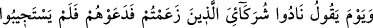

Zâhid, sakın Hakk’ın mekrinden emin olma!
Çünkü ibâdethânenden ateşgede o kadar uzak değil
4. Bu işaretlerden birisi de Âdem sûretinde olup da İblis sıfatı taşıyan Âdemoğulları
ile ilgilidir. Onlar insan şeytanlarıdır. Onların alâmetleri, Allah’ı bırakıp şeytanı ve
onun neslini dost edinirler. Rahman’a itâat etmez, şeytana boyun eğerler. Âdem’in
neslinden olan peygamberlere ve velîlere tâbi olmaz, İblis’in soyuna uyarlar. Dostla
düşmanı ayırt etmezler. Bu cehâletlerinden ötürü kendi nefislerine de zulmetmiş olurlar.
Şeytana dost olmayı, Allah’a dost olmakla değişirler. Oysa şeytan ve nesli, kendilerinin
düşmanıdır. Allah’ın dostları ise Allah Teâlâ’yı, O’nun dışında (masiva) hiçbir şeyle
değişmezler ve Allah’tan gayrısını düşman edinirler. Nitekim İbrâhim Halîlullah (a.s.)
şöyle demiştir: “Siz ve eski atalarınız. Onlar benim düşmanımdır. Yalnız âlemlerin
Rabb’i (benim dostumdur.)” (eş-Şuarâ, 26/76-77) Çünkü o Allah’a gerçek anlamda
dost olabilmenin ancak O’ndan gayrısını (masiva) düşman tanımakla mümkün olacağını
görmüştü.
5. Bu işaretlerden birisi de şudur: Allah Teâlâ’nın şeytanları ne göklerin ve yerin
yaratılmasına, ne de kendilerinin var edilmesine şâhid tutmadığını haber vermesi, O’nun
düşmanlarını şâhid tutmadığı bir takım şeyleri bazı dostlarına gösterdiğine delildir.
Onlara ezelî nûruyla yok olan bazı eşyaya kudretinin ilk taalluk edişini ve yokluktan
varlığa nasıl çıkardığını göstermiştir. Ehl-i nazarın ‘Bârî Teâlâ’nın vücudunun keyfiyeti,
kudretinin yok olan şeylere (ma‘dûmât) nasıl taalluk ettiği ve ölümden sonraki azâbın
nasıl olacağı ve benzerleri şeyler araştırılmaz.” şeklindeki sözlerine gelince bu bizim
yukarıda söylediklerimizle çelişmez. Çünkü herhangi bir şeyin cüz’î akla göre imkansız
olması, küllî keşfe yakın olmasına engel değildir. Zâten bizim sözümüz de keşf
ehlinedir, başkasına değil.
Sâib der ki:
Aşk sözünü akla söylemek
Ölünün damarına neşter vurmaktır
Mesnevî’de ise şöyle der:
Ey kendini, aklını beğenip hediye olarak Allah’a götüren kişi!
Allah’ın huzûrunda, zavallı aklın, topraktan daha değersizdir.
52. O gün (Allah kâfirlere): Benim ortaklarım olduklarını ileri sürdüğünüz